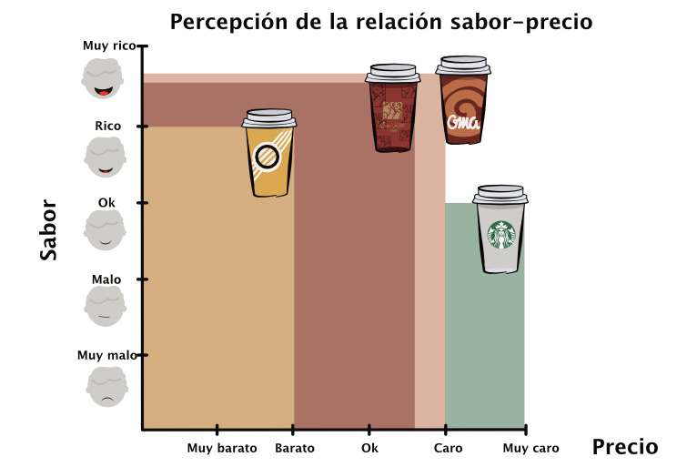
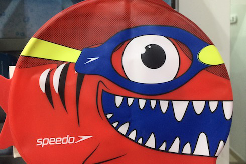
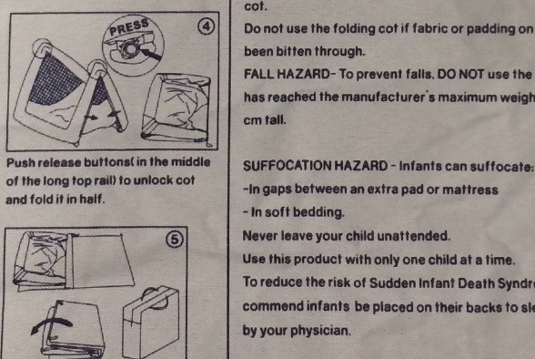

Ideas + Insights
# e-commerce

Una compañía demasiado jerárquica se demora mucho en tomar decisiones
El episodio 2 de SmallData --el podcast de Hexis-- está dedicado a conversar con Juan Pablo Ordoñez, Director de mercadeo de marcas como Pepe Ganga y Dafiti.
# venture capital

En América Latina es más importante la persona que la idea
El episodio 3 de SmallData --el podcast de Hexis-- está dedicado a conversar con Carlos Gutierrez, inversionista y cofundador de INVX, firma de venture capital que ha participado en startups como Tpaga y Rappi.
# UX Research

Los insights de Airbnb
Airbnb tiene una fortuna en datos. Pese a ello, la marca cree firmemente que la investigación cualitativa es esencial para el desarrollo de sus productos.
# APPS

Entrevista: Juan Gómez, desarrollador Gemalto
En el episodio 1 del podcast de Hexis conversamos con Juan Sebastián Gómez, desarrollador colombiano especializado en aplicaciones móviles y seguridad informática. En la entrevista, Sebastián narra sus inicios como desarrollador de videojuegos y cómo eso lo llevo a trabajar con empresas de seguridad informática. En ese contexto, se involucró en algunas startups, como Preo (BBC).
# VENTAS

Bogotanos con mascota Entrega 1
En Bogotá hoy es común encontrar personas caminando con perros "de raza". La función de las mascotas en las familias también ha cambiado. De guardianes externos pasaron a ser miembros de la familia. Una de las consecuencias es que la relación con las mascotas se convirtió en un elemento a tener en cuenta en las decisiones de consumo.
# BANCA
Digital insights para un banco latinoamericano
Itaú es la institución financiera más grande de América Latina. ¿Cómo superar la desconfianza en el dinero y la banca? ¿Puede un banco como Itaú usar la UX Research para ayudarlos? Con una gran cantidad de usuarios que tienen poco conocimiento financiero, surgen varios desafíos
# EXPERIENCIA DE COMPRA
Mensajería internacional en Bogotá y experiencia de compra
La mensajería internacional es esencial para cualquier Millenial que viva en una ciudad. Seguridad, trazabilidad y rapidez son prioridades que están por encima del costo en la mente de un típico miembro de este segmento
# MARKETING DE CONTENIDOS
Facebook Pulse: ¿Cómo funciona el marketing de contenidos en una comunidad online de 150,000+?
El poder de Facebook no se reduce a la publicidad tradicional. Muchas marcas pescan con dinamita en esa red social, pero también son muchas las que usan el marketing de contenidos. ¿Cómo funciona el marketing de contenidos en la práctica?
# B2B
Madres Millenials en empresas: trabajar sin perder la lactancia
Las mujeres menores de 36 años están crecientemente enfocadas a la búsqueda del bienestar. El 90 % de este segmento quieren amamantar a su bebé en vez de usar fórmula, y el 60 % ha experimentado con frecuencia sentimientos de culpa.
#NETNOGRAFIA
Recetas de marketing que terminan en pequeños desastres
Mostrar la propuesta de valor es más importante que hablar de ella (aunque siempre hay que cacarear el huevo).
# IMPULSO DE CONSUMO
Usar la psicología para entender la compra de un apartamento
Tener un apartamento es una preocupación esencial de todo latinoamericano de clase media. Desarrollamos una investigación cualitativa cuyo objetivo era observar los sentimientos del consumidor de crédito inmobiliario.
# SEGMENTACION
¿Oficinistas de estrato 4 prefieren café barato y abundante de Tostao?
Tostao está poniendo patas arriba la clásica cita para tomar café en Bogotá. En sus locales se puede comprobar que una parte de la clientela de las marcas tradicionales se ha ido, o al menos está experimentando con la nueva opción de consumo.
# MARKETING
Distroller en Colombia: retos de marketing y branding
Distroller --la marca mexicana de juguetería-- ha llegado a Colombia. Su principal fortaleza es la atracción que muchos colombianos sienten por la cultura mexicana. Pero esa también es su principal debilidad
# FIDELIZACIÓN
Sony PS4 y Microsoft XBOX: fidelidad de marca
El marketing de gaming en Latinoamérica no es particularmente ambicioso. La región representa apenas el 4% de los ingresos mundiales de esta industria. Ese 4 %, sin embargo, es mucho dinero
# SEGMENTACIÓN
La estrategia de Speedo en el segmento de niños
La estrategia de Speedo es relativamente segura pero está rezagada de algunas tendencias del mercado. Esta fue nuestra conclusión luego de analizar la estrategia de género
# BRANDING
La debilidad de las marcas para bebé
¿Cómo venderle a una generación de padres preocupada por la seguridad y el éxito? En este estudio analizamos posibles vacíos de las marcas para bebé.